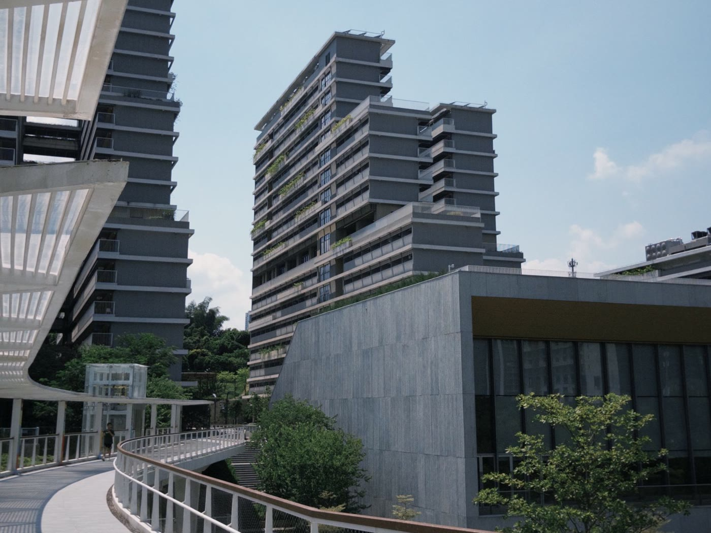
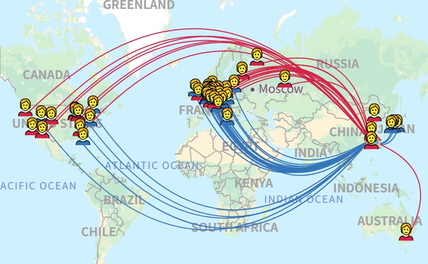
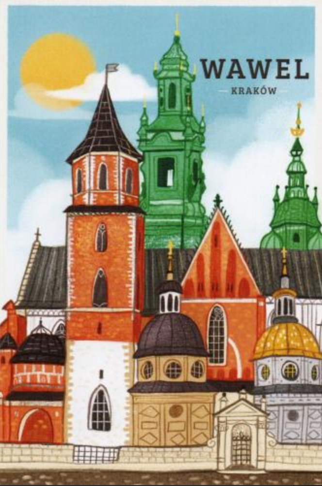
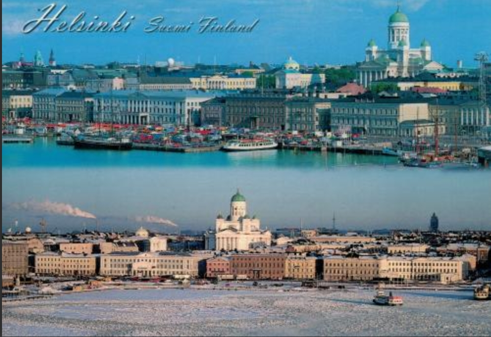
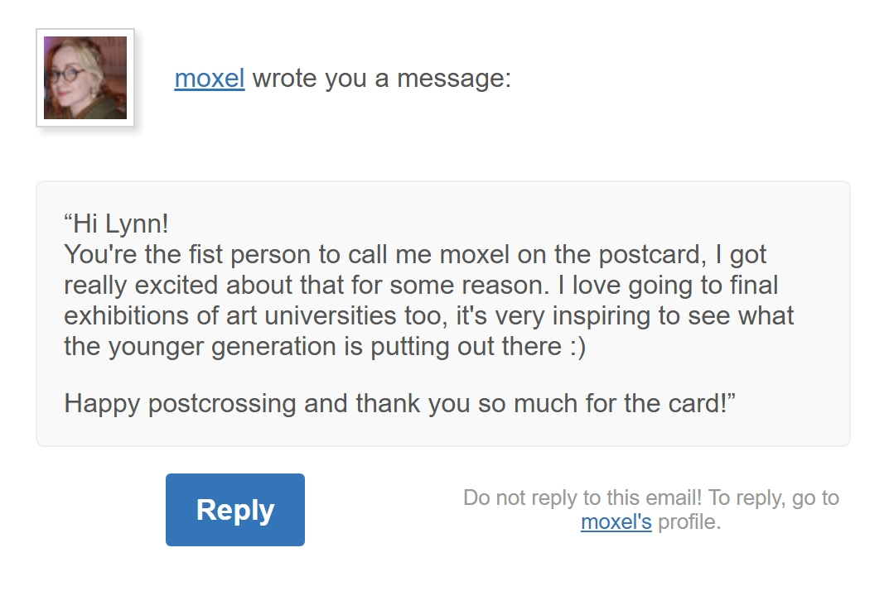
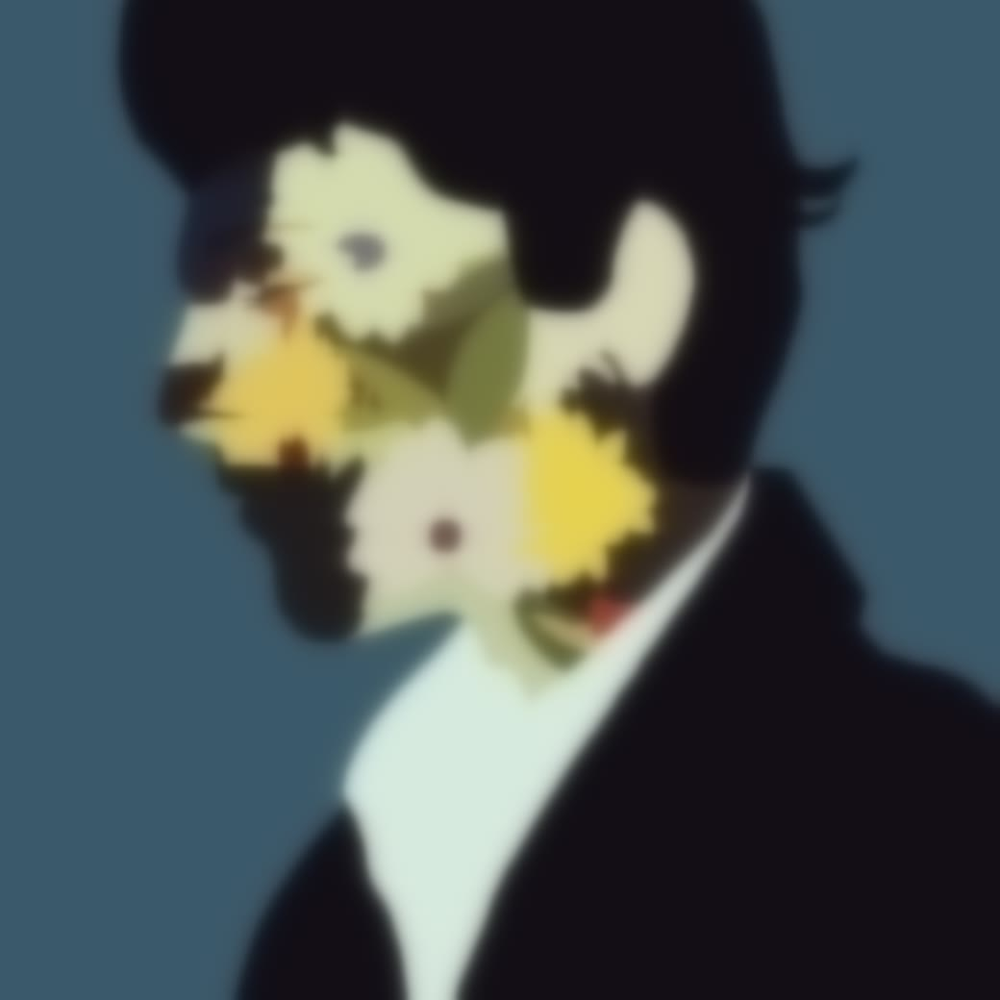
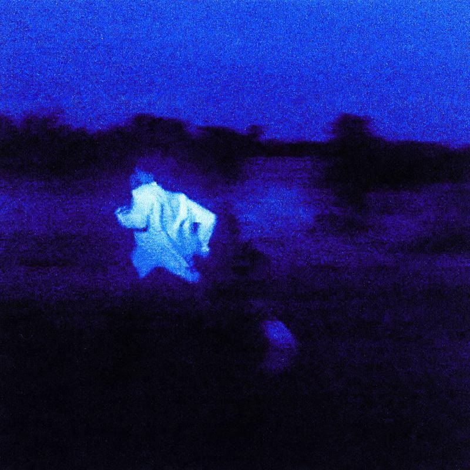

一个勇于探索未知领域并深耕的大一新生
完善个人主页、整理作品集；学习专业基础知识与编程，同时拓展绘画、音乐、街舞、阅读等业余爱好。
非侵入式脑机接口、AI 应用、知识整理。希望能把技术与兴趣结合，做出让人 0 压力的科技产品。
喜欢安静，用线条和色块记录世界。
2026 年 8 月，我进入天津大学（深圳校区），成为智能医学工程专业的一名学生。这里是我大学这条路的起点——先把基础打扎实，再慢慢找到真正想深入的方向。

时间轴才刚起步，之后发生的事，我会一条条补上。
脑机接口是我目前最感兴趣的方向——它把神经信号与机器直接连在一起，让一个念头不必经过手指和键盘，就能变成屏幕上的动作、文字或声音。
作为智能医学工程专业的学生，我尤其好奇它在医疗里的可能：让失去行动能力的人重新控制肢体，让无法开口的人重新“说话”。右边这个演示，是我对这条路径的一点想象。
我喜欢通过 Postcrossing 和世界各地的朋友交换明信片，用一张张纸质卡片，让遥远的国家、街道和故事，真实地抵达我手里。
每寄出一张，就有一份期待；每收到一张，就打开一扇关于远方的小小窗口。这是我的另一种旅行。





从 5 岁起，我就很喜欢绘画。现在正在学习板绘——不过速度特别慢，一张要磨很久。所以先放一张模糊的在这里，画完再揭晓。
我特别喜欢听各种类型的歌，主要听 R&B 和嘻哈说唱。个人习惯是一次性听完整张专辑，也会去了解创作者背后的故事——对我来说，一张专辑更像一段完整的话，得从头听到尾。

01 / 13轻点封面看下一张
你有什么喜欢的歌曲或者专辑想推荐给我吗？我很乐意收听。写下名字就行，想说的话也可以留一句。
还没有人留言 —— 你可以是第一句。
欢迎指出一个看不懂、不好找或者用着别扭的地方——比如某个版块在哪、手机上字是不是太小、某个按钮点了没反应。写一句就够，我会认真看。
无论你是朋友、同学、潜在合作伙伴，还是面试官，都欢迎来信交流。